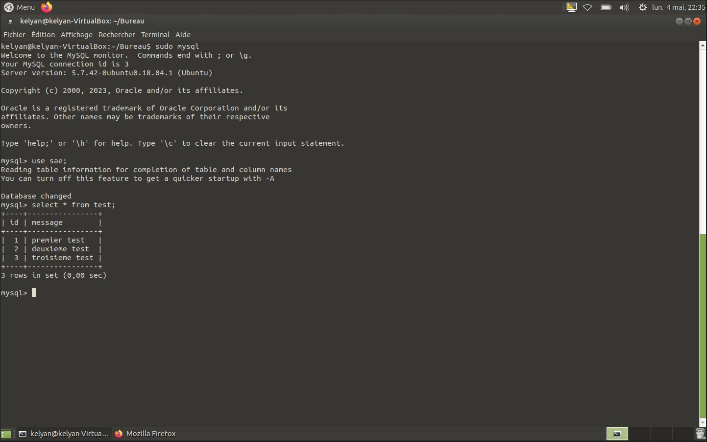
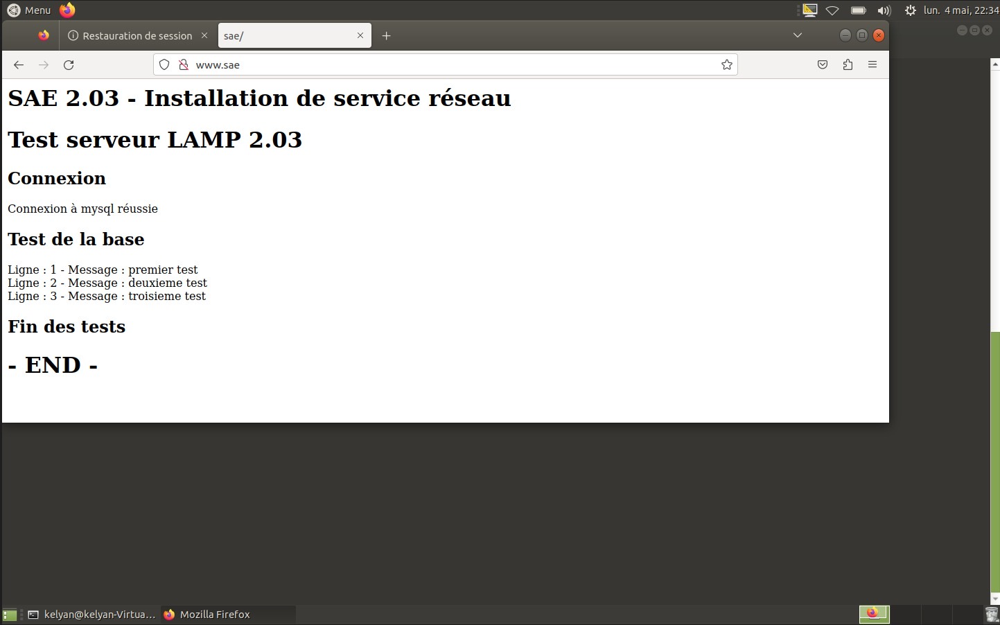

SAE Réseau • BUT Informatique
Installation d'un service réseau LAMP
Mise en place d'un environnement serveur sous Linux avec Apache, PHP et MySQL. L'objectif était de comprendre le fonctionnement d'un service web côté serveur et de vérifier la connexion entre une page web et une base de données.
Contexte du projet
Cette SAE portait sur l'installation et la configuration d'un service réseau. Le travail consistait à utiliser une machine virtuelle Linux afin de déployer un serveur web capable d'afficher des données issues d'une base MySQL.
Besoin à satisfaire
Le besoin était de créer une infrastructure simple permettant d'héberger une page web, de se connecter à une base de données et d'afficher des informations stockées dans celle-ci.
Technologies utilisées
- Linux Ubuntu
- Apache
- MySQL
- PHP
- VirtualBox
- Commandes Unix
Démarche de réalisation
Installation de l'environnement
Travail sur une machine virtuelle Linux pour configurer un environnement serveur.
Configuration de la base de données
Création d'une base MySQL, d'une table de test et de plusieurs lignes de données.
Connexion entre PHP et MySQL
Développement d'une page web permettant de tester la connexion et d'afficher les données.
Résultat obtenu


Compétences mobilisées
- Administrer : installer et configurer un service sous Linux.
- Développer : créer une page web connectée à une base de données.
- Gérer des données : créer une table, insérer des données et les interroger.
- Diagnostiquer : vérifier les erreurs de connexion et tester le fonctionnement.
Si c'était à refaire
J'organiserais mieux les fichiers du serveur, j'ajouterais une feuille CSS pour améliorer l'affichage et je documenterais davantage chaque commande utilisée. Je mettrais aussi en place une configuration plus sécurisée pour la connexion à la base de données.
Ce que ce projet m'a apporté
Cette SAE m'a permis de mieux comprendre le rôle d'un serveur web, d'une base de données et du langage PHP dans une architecture LAMP. Elle m'a aussi aidé à progresser sur Linux, les commandes système et la résolution de problèmes techniques.